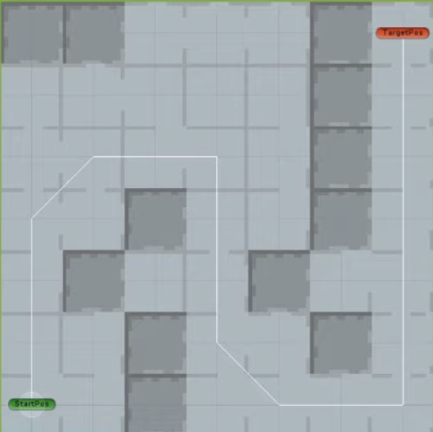

A* Algorithm Demo : Unity
-
프로젝트 설명:
A* 알고리즘을 활용한 길 찾기 2D 데모 프로그램 / 솔로 프로젝트
-
기술 스택:
C#, Unity
A* 알고리즘을 사용하여 Unity 2D를 활용해서 간단한 데모를 만들었습니다.
Heuristic cost function: f(n) = g(n) + h(n)
g(n): 출발 노드에서 현재 노드 n까지 도달하기 위한 최단 비용
h(n): 현재 노드 n에서 목표 노드까지의 예상 이동 비용으로, 휴리스틱(Heuristic) 거리 측정값으로 맨하튼 거리 방식을 사용하였습니다
f(n): 현재 노드 n까지의 최단 비용 g(n)과 목표 노드까지의 예상 이동 비용 h(n)을 더한 총 비용
이번 데모를 제작하며, AI가 메인 캐릭터를 발견했을 때 최단 거리로 이동하도록 하는 로직을 구현하는 데 활용하면 좋겠다는 생각이 들었습니다.
